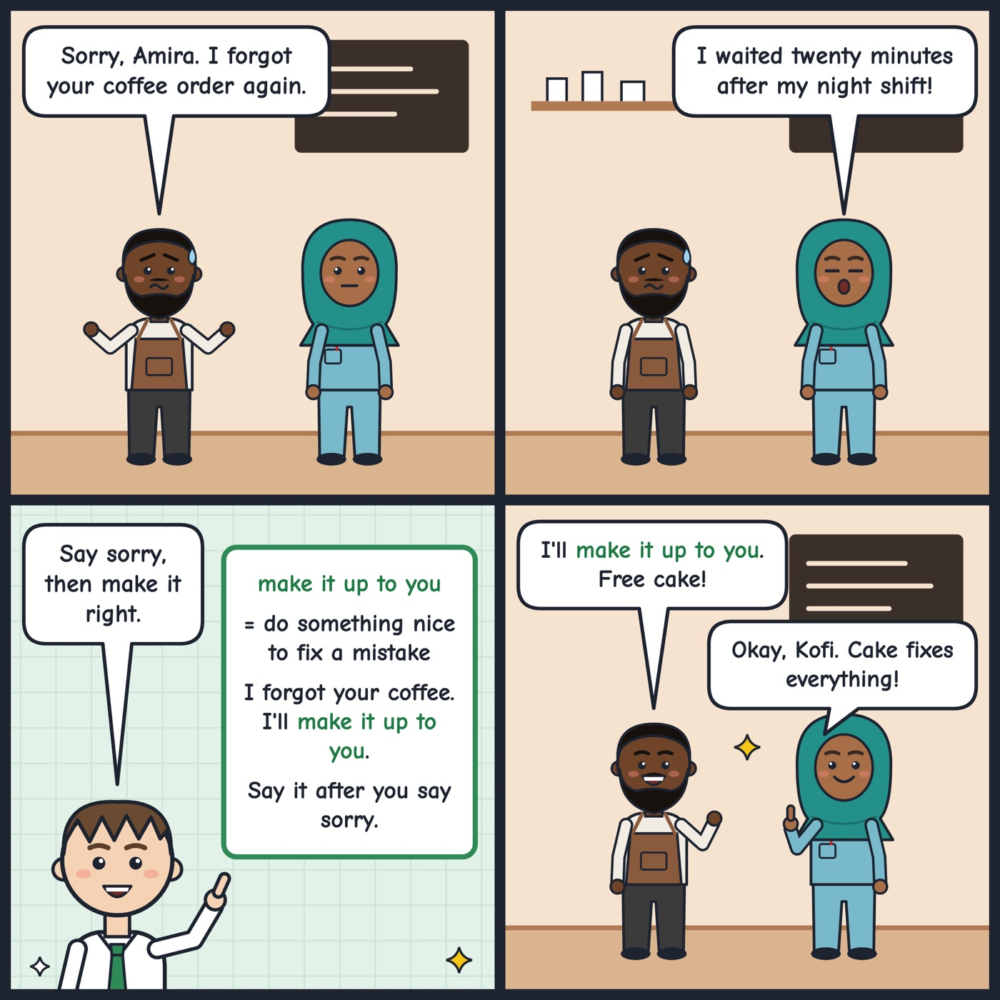

make it up to you
To do something nice to fix a problem you caused.
I'm sorry I missed your party. I'll make it up to you with dinner.
'Make it up to someone' means to do something kind to repair a mistake. Say it after an apology.

Your turn
How would you make it up to a friend you forgot?
How would you make it up to a friend you forgot?